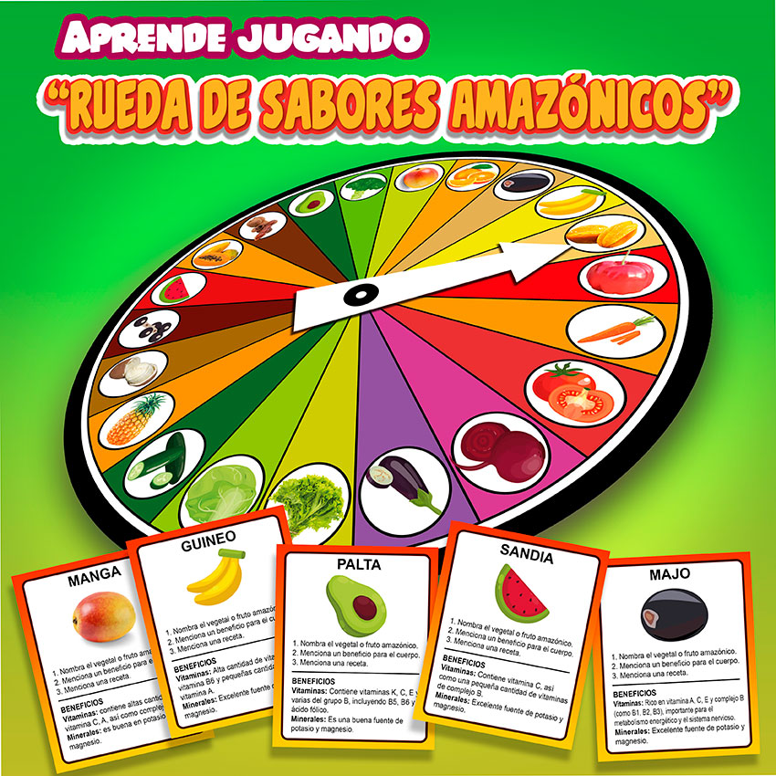
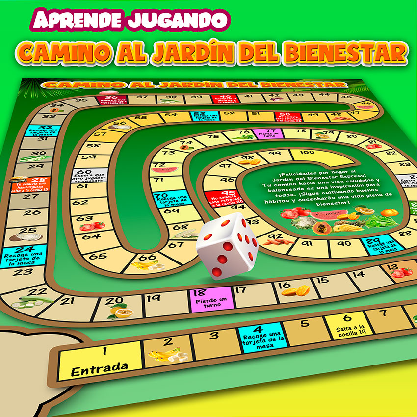
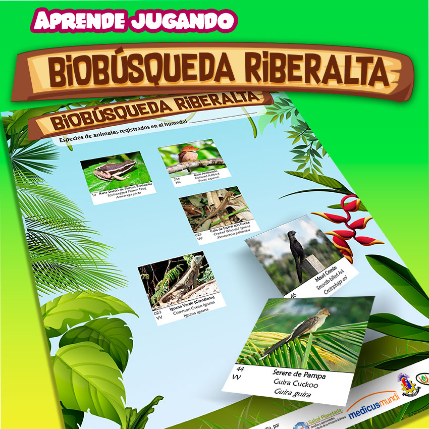
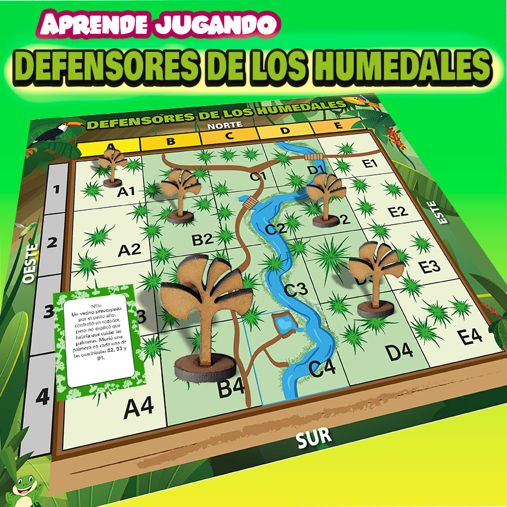
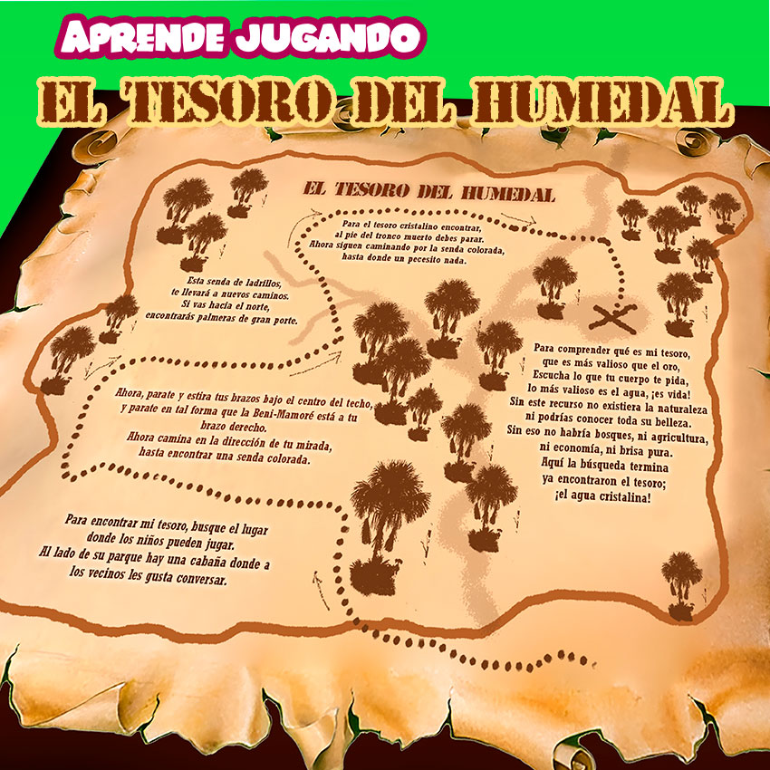

INSTITUTO DE INVESTIGACIONES FORESTALES DE LA AMAZONÍA
Inicio
Nosotros
Antecedentes
Equipo
Organización
Organigrama
Dpto. Investigación
Extensión e interacción social
Planes Estratégicos
Redes y alianzas interinstitucionales
Informes Anuales
Contacto
departamentos investigación
Manejo de bosques
Parcelas Permanentes de Monitoreo
Dinámica ecológica de bosques
Cambio climático y degradación ambiental
Prácticas de manejo
silvicultura y agroforesteria
sistemas agroforestales y silvopastoriles
Restauración de paisajes degradados
servicios ecosistémicos
silvicultura de especies forestales
Biodiversidad y mejoramiento genético
conservacion de la biodiversidad
Inventario y monitoreo de la biodiversidad
mejoramiento genético y bancos de germoplasma
Desarrollo de productos forestales
especies promisorias
fortibebé
asaí-pop
especies medicinales
Extensión e interacción social
Publicaciones
Científicas
Manuales
audiovisuales
Biodiversidad
Multimedia
Manuales fauna
Manuales árboles
Salud planetaria
Salud planetaria
Juegos Salud Planetaria
Campañas ambientales
Noticias
Actividades del IIFA
IIFA en las Noticias
Materiales de apoyo
Notas técnicas
Contacto
JUEGOS SALUD PLANETARIA




